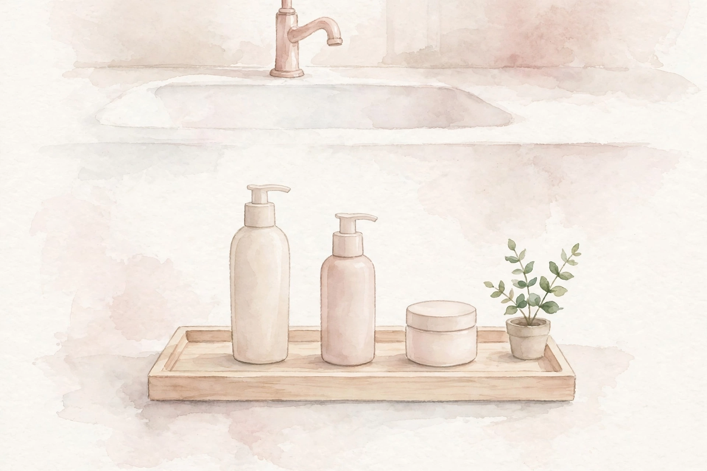

トップ ＞ スキンケア ＞ 最初に揃えるなら何から？ 基礎3点の考え方
最初に揃えるなら何から？ 基礎3点の考え方

「スキンケアを始めたいけれど、何から買えばいいのか分からない」。施術のお客様から、よく受ける相談のひとつです。売り場には何段ものアイテムが並んでいて、全部揃えようとすると予算も置き場所も足りなくなります。この記事では、最初に揃える「基礎3点」の考え方を整理します。
基礎3点は、役割で分けて考える
基礎3点とは、役割の違う3種類のことです。ひとつ目は「洗うもの」（洗顔料）。ふたつ目は「水分を与えるもの」（化粧水）。みっつ目は「覆うもの」（乳液やクリーム）です。美容液やパックは、この3点がそろった後に足していく位置づけで構いません。役割で考えると、売り場の表示も読みやすくなります。
すでに何かを持っている場合は、足りない役割から買い足します。化粧水だけ持っているなら、次は「覆うもの」という具合です。同じ役割のものを重ねて買うより、役割をそろえる方が、手順全体の組み立てが安定します。
1点ずつ足すと、合う・合わないが見える
3点を一度に全部新しいものにすると、肌の感触が変わったときに、どのアイテムが理由なのか分からなくなります。1点ずつ足して、それぞれ1〜2週間ほど使ってから次を考える進め方が、結果として近道です。サンプルや小さいサイズがある商品は、この「試す期間」に使いやすい形です。
使った感触は、簡単なメモに残しておくと便利です。日付と、使った量、朝の手触りなどを一行書くだけで、買い替えのときの判断材料になります。
予算は「1か月の使用量」で配分する
予算の配分は、価格そのものより「1か月にいくら分か」で考えるのがおすすめです。内容量と1回の使用量から、何か月持つかを計算すれば、月あたりの金額に直せます。毎日使う洗顔料と化粧水は続けやすい価格帯に、覆うものは量を調整しやすいタイプに、といった配分もひとつの考え方です。
基礎3点は、長く付き合う道具立ての土台です。焦って全部を揃えず、役割と順番を決めてから買い物に出ることが、無駄の少ない始め方だと思います。
揃えた後の置き場所も、続けやすさを左右します。洗顔料は洗面所、化粧水と乳液は洗面台の手の届く範囲、というように、使う場所の近くに置くのが基本です。棚の奥にしまい込むと、手順そのものが遠のいてしまいます。施術の現場でも、道具は使う順番に手の届く場所へ並べます。基礎3点は毎日使うものだからこそ、置き場所まで含めて「手順」として設計しておくと、忙しい日でも自然に手が伸びるようになります。買い物の前に置き場所の寸法を測っておくのも小さな工夫です。容器の大きさが置き場所に合わないと、せっかく揃えた3点も出し入れが億劫になってしまいます。
セラフィナ「洗う・与える・覆う。役割がそろえば、まずはそれで十分なんだね」